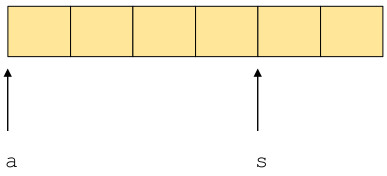
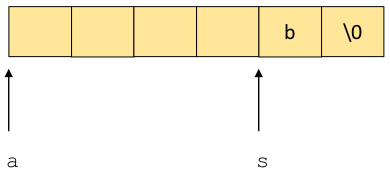
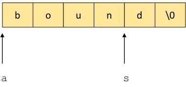

The C library function strcpy() copies a string (See here for a quick tutorial on C strings) from one memory location to another. The prototype for strcpy is
char *strcpy(char *dest, char* src)
The function strcpy copies the string that begins at the memory location pointed to by src to the
memory location pointed to by dest up to and including the null termination character '\0'.
strcpy() is considered insecure and is vulnerable to a number of problems. Three of those problems are
unbounded string copy, buffer overflow and
null termination errors
Many string functions are vulnerable to copy errors because the functions do not allow the programmer to specify the length of the
string to be copied. For example, strcpy() is vulnerable to many errors because the length of the string copied from the
src to dest. Consider the
following C code:
static char a[4];
static char s[2];
int main(int argc, char **argv) {
strcpy(s,"b");
strcpy(a,"bound");
printf("a = %s\n",a);
printf("s = %s\n",s);
}
If this code is executed, the string "bound" will be 5 characters long plus one character for null. Since a is only allocated space for 4 characters,
the unbounded copy performed by strcpy() is a runtime error.
a and s, a compiler may allocate these variables continguously as below.

After the first call to strcpy(), the memory contains

and then, finally, after the second call to strcpy(), memory contains

Thus, the output of the two calls to printf() is
a = bound s = d
strcpy() is also vulnerable to null termination errors. For example, in the code below, no space is allocated for the null termination
character in the string first.
static char first[5];
static char last[5];
int main(int argc, char **argv) {
strcpy(first,"First");
strcpy(last,"Last");
printf("Name is: %s, %s\n",last,first);
}
Depending on the compiler the second call to strcpy() may overwrite the null character ending the string
"First". The output could be
Name is: Last, FirstLast